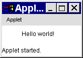

Executing Applets
Using PFE for the compilation and execution of
Applets uses the same general techniques. In addition to the *.java
files which are needed for the applet, a html file is
required containing an <APPLET> tag referencing the applet. For example assuming the
file PfeAppletDemo.java containing a simple applet which
merely says "Hello world!" in a Label component is available,
then the corresponding html file might (should?) be called PfeAppletDemo.html.
With the PfeAppletDemo.html window
active pressing the Execute button on the tool bar and
entering the command appletviewer %f in the Command
area of the Execute Dos … dialog will
result in the applet being executed.

The appletviewer can be closed be selecting Quit from the menu posted from the Applet label at the top of the window.